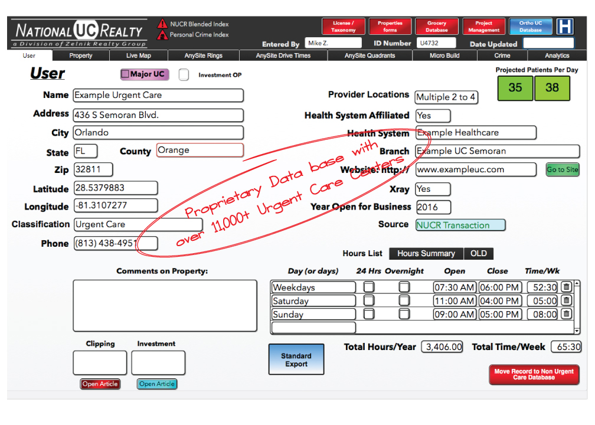
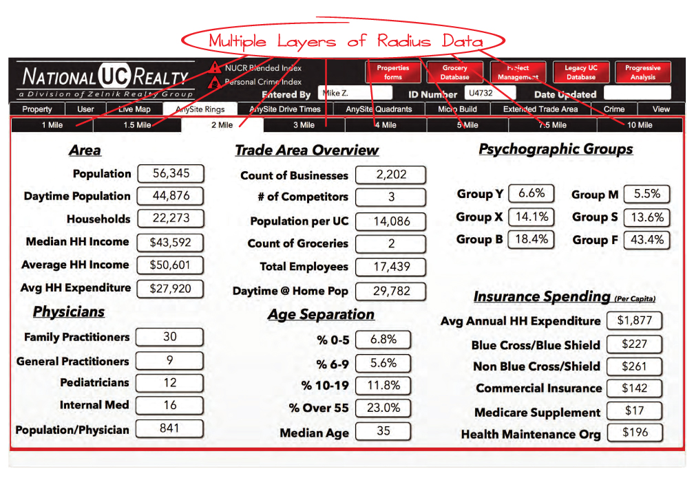
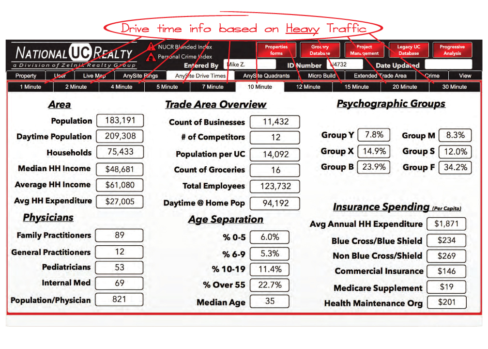
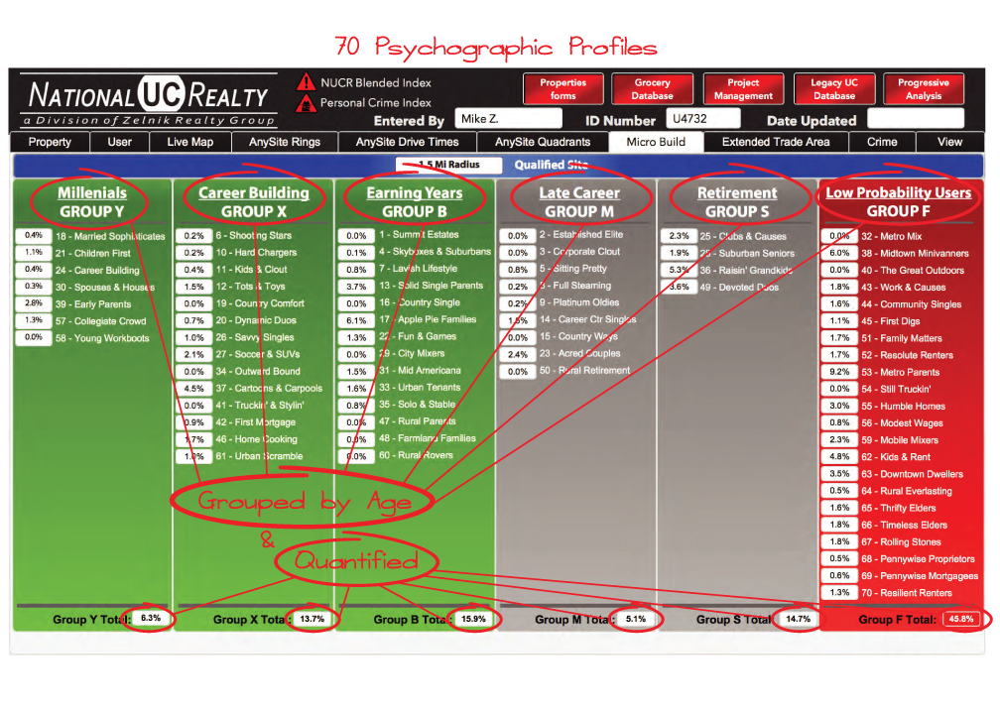
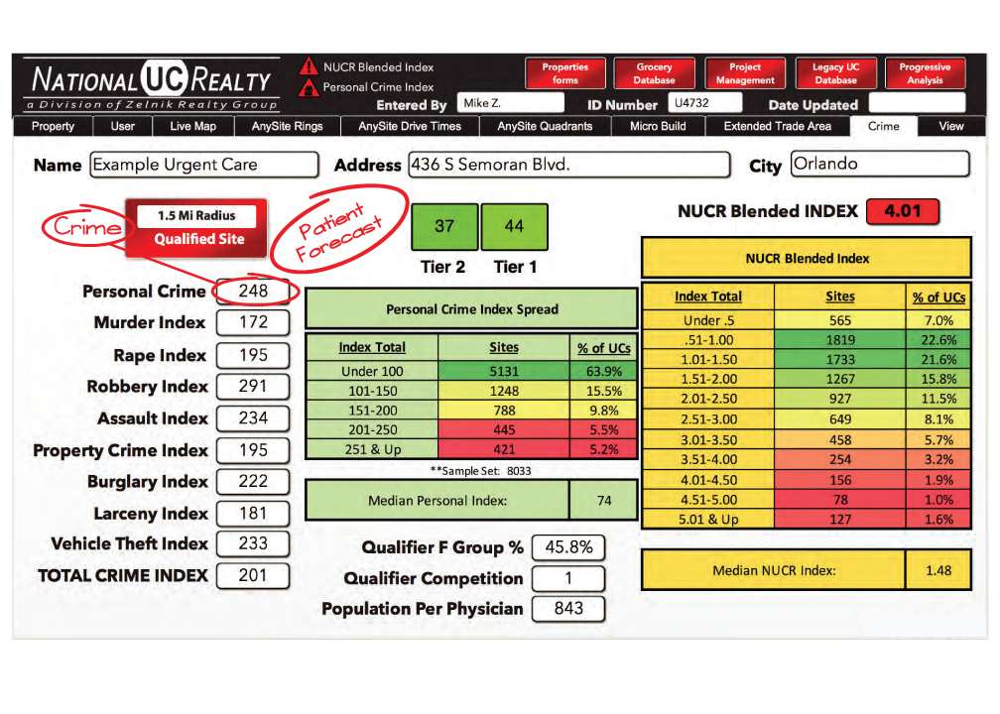
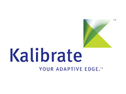
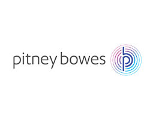

The National UC Realty database contains over 14,000 medical clinic locations. Using this powerful database, we can quickly analyze existing clinics to establish key benchmarks in our site selection process. Highlighted below are a few of the main parameters we use to find prime sites for new medical clinics.

It all starts with the clinic information. Specific data about each clinic is entered into this form. Some of the key fields include the Practice Name, Address, Phone, Latitude, Longitude, Classification, Provider Location Count, Health System Affiliation, website, Hours of Operation, Year Opened and on-site Xray availability.
We catalog demographic, income, age, medical service, & psychographic data for 8 radius distances. This data is used to give an apples-to-apples comparison between any and all locations in a city, county, state, region or the whole country.


We also catalog demographic, income, age, medical service, & psychographic data for 10 Drive Times which we use in our benchmark comparisons.
Our advanced GIS software allows us to break down any radius into 4 quadrants to get a better picture of the make-up of a trade area. Quadrants give insight as to the balance of the population, & whether an area may be at-risk due to socioeconomic or physical features (for example: lakes, rivers, airports, or large populations of low probability patients).


Our Psychographic Data is based on “life stages” and segments households into 70 different groups. As people move through the stages of life, their behaviors change. The needs and demands of young singles differ dramatically from a family of six. As people age, gain new family ties, take on responsibilities, and gain or lose economic standing, they develop new patterns of behavior. These patterns are likely to be more similar to others in the same position and different from their behaviors in earlier life stages. We monitor existing and closed clinics to gain insights into which of the 70 groups are most & least likely to use medical clinics; we also evaluate which Psychographic groups live in the trade area as part of our Site Selection and Site Analysis projects.
Using index data from the FBI & local municipalities, we are able to find the crime index for any location in the country. This data is returned in the form of an index value where 100 is considered normal. The Personal Crime index is important in evaluating trade areas. In regions where this index is high, we find there is often a large population of low probability patients. The NUCR Blended Index score is a proprietary formula that integrates Psychographic data with Crime Index data to evaluate trade areas.



If you’d like to discuss this in more detail, please call (813) 501-7191 or contact us online.
Contact Us